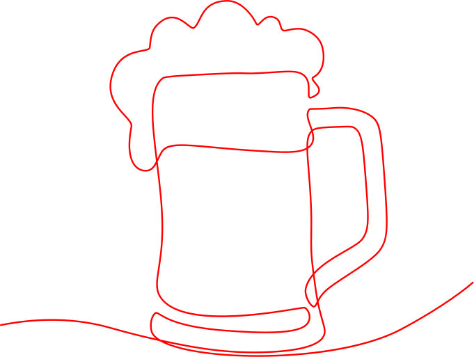

Bruine Kroegen in Maastricht

Café De Pieter
AfmeldenAan de bar en de houten tafels zijn talloze glazen bier en wijn gedronken, en is vaak – vol overtuiging maar zelden met succes – geprobeerd iemand van mening te laten veranderen.
Adres: Sint Pieterstraat 22